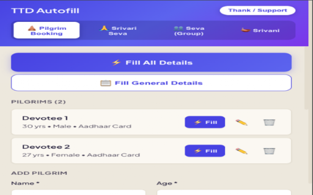
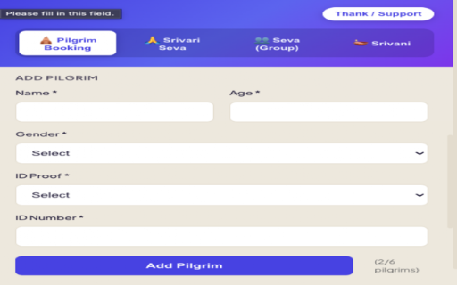
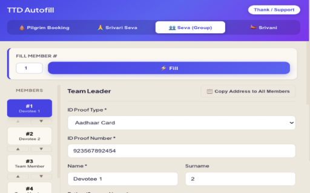
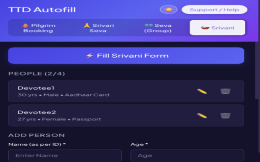

Pilgrim Booking
Darshan, Seva and accommodation
Save up to 6 pilgrims, including mixed Aadhaar and passport groups, plus general contact details.
- Smart slot detection
- Passport and Visa/OCI popup handling
- Email, location, pincode and Gothram
Practical guidance + autofill support
Understand tickets, tokens, accommodation, walking routes and temple essentials—then save time on supported TTD forms with the TTD Autofill Assistant.
Independent website. Not affiliated with TTD or r/TirumalaDarshan.
Start here
Choose the question closest to where you are in your journey. Each guide separates stable guidance from details that must be checked live.
First visit
Choose a darshan route, decide where to stay, prepare documents and build a realistic day plan.
Read the first-timer guide →Darshan choices
Know what each route means, where it begins and what cannot be guaranteed.
Compare options →Online booking
Prepare profiles, watch official release notices and avoid payment-day mistakes.
Prepare for release day →Accommodation
Understand online rooms, CRO availability, PAC facilities and private stays.
Plan your stay →Travel & walking
Compare footpaths, luggage handling and travel between Tirupati and Tirumala.
Choose a route →Temple essentials
Pack with fewer surprises and respect Tirumala's sacred environment.
Use the checklist →Live community knowledge
Daily crowds, token issue times, festival changes and offline room availability can shift quickly. For current experiences and questions, visit r/TirumalaDarshan.
Credit: the topics and practical questions in these guides were informed by the community's pinned resources and devotee discussions. This website is independently owned and has no affiliation with, endorsement from or official relationship to the subreddit.
TTD Autofill Assistant · v7.0.0
TTD Autofill Assistant is a Chrome extension that stores user-entered profiles locally and fills supported fields after the user clicks a fill action. It does not sell temple tickets, provide booking services or reserve inventory.
Pilgrim Booking
Save up to 6 pilgrims, including mixed Aadhaar and passport groups, plus general contact details.
Srivari Seva
Prepare identity, address, education, profession, experience and reference information in advance.
Group Seva
Manage a team leader and member profiles, then fill each matching accordion on the TTD application.
Srivani
Save up to 4 people for Srivani Trust current-day ticket booking and fill the table in order.
Product screenshots
These screenshots show the actual interface published with the Chrome Web Store listing.




Licensing & pricing
Choose a one-time 7-day, 30-day or 90-day pass. You pay for a software licence—not a temple ticket, reservation, priority queue, donation or booking service.
Personal & family
For your own household's non-commercial use.
Pilgrim booking
Choose a one-time 7-day, 30-day or 90-day pass for one browser. Pricing and taxes are shown before purchase.
Quick start
Add TTD Autofill Assistant from the Chrome Web Store and pin it to your toolbar.
Open the extension and select Pilgrims, Seva, Group or Srivani.
Enter the requested information carefully. It is saved locally as you work.
Review the page, click the relevant fill button, verify every field, then submit the form yourself.
Detailed guide
Add each pilgrim's name, age, gender, ID type and number. Passport holders can also save country, Visa/OCI number, visa type and validity date. Add your email, city, state, country, pincode and, where required, Gothram.
On the TTD pilgrim page, use Fill All Details for all available slots and contact fields, or Fill beside one saved pilgrim. The extension fills only the slots present on the page.
Complete the identity, fitness, address, volunteer, education, profession, experience, language and reference sections. Select a photo and education document where required; supported uploads are JPEG or PNG, up to 1 MB each.
Open the individual Srivari Seva application and choose Apply to Form. Review dropdowns, uploaded files and every populated value before continuing.
Add up to 15 members. Member 1 is the team leader. Use Copy Address to All Members or Copy Address from Leader to reduce repeated entry; the leader's nearest TTD temple is shared with the group.
On the TTD group application, choose a member number and use Fill or Fill This Member. The extension moves to the next member after filling, but you should verify each accordion.
Add up to 4 people with name, age, gender, ID proof type and ID proof number. Open the Srivani Trust current-day ticket page and click Fill Srivani Form to populate the pilgrim table in saved order.
Built for real booking flows
Optimized fillingHandles supported fields in parallel while respecting dependent dropdowns and popups.
Light and dark themesYour theme preference is remembered for the next session.
Local by designThe developer does not operate a backend for your saved information.